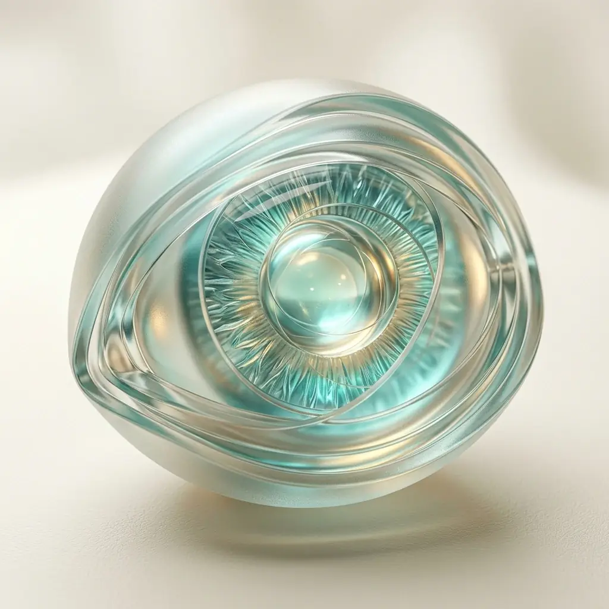
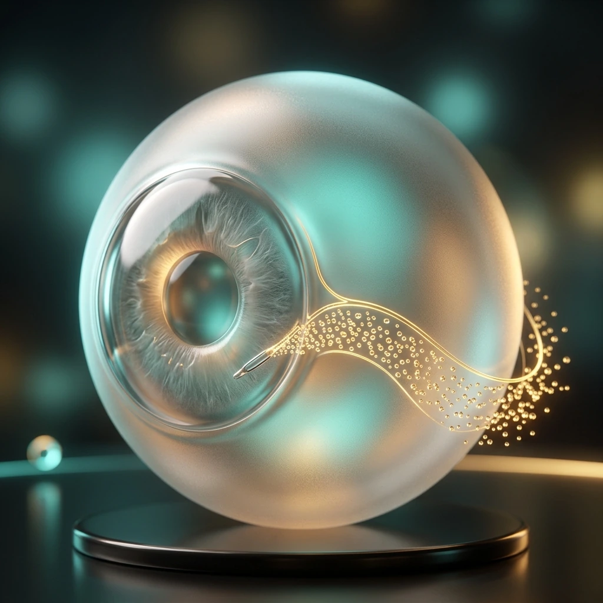

Advanced Heart
& Eye Care,
Meerut.
Two specialties under one roof — evidence-based care, advanced diagnostics, and clear guidance in Hindi or English.

Meet Your Doctors
Decades of expertise and genuine compassion — two specialists who have dedicated their careers to Meerut.
Dr. Hari Om Tyagi
M.D. (Medicine), D.M. (Cardiology)
Interventional Cardiologist
Member — IMA & Cardiological Society of India
20+ YEARS EXPERIENCE

Dr. Jeenu Priya Tyagi
M.S. (Ophthalmology)
F.C.I.M.S., F.M.S.R.T., Cornea Specialist
Phaco & Refractive Surgeon
MICRO INCISION CATARACT SPECIALIST
Key Procedures Explained
Understanding your procedure reduces anxiety. Here's what happens — step by step.
Coronary Angioplasty
A thin catheter with a balloon is guided to the blocked coronary artery using advanced imaging. The balloon inflates to compress plaque, and a stent is permanently placed to keep the artery fully open.
Catheter insertion
Thin tube inserted via wrist or groin arteryNavigate to blockage
X-ray guidance to the exact blocked spotBalloon + Stent
Balloon opens the artery, stent holds it permanently
Pacemaker Implantation
A small battery-powered device implanted under the skin sends electrical impulses to keep your heart beating at the correct rate. Recommended for arrhythmia and heart block.
Incision below collarbone
Device pocket created under local anaesthesiaLead wire placement
Wire guided through vein into heart chamberDevice connected & tested
Battery unit sealed, programmed, and tested
Cataract Surgery (Phaco)
Micro Incision Cataract Surgery — stitchless, painless, no injections. The cloudy lens is broken up with ultrasound and removed, then a premium IOL is implanted.
Micro-incision (2.2mm)
Smaller than a grain of rice — no stitches neededPhaco emulsification
Ultrasound breaks the cloudy lens into tiny piecesIOL implantation
Foldable artificial lens inserted — unfolds perfectly
Laser Vision Correction
State-of-the-art laser permanently reshapes the cornea to correct myopia, hyperopia, and astigmatism. Under 15 minutes; vision improves within 24 hours.
Corneal flap creation
Thin protective flap created on cornea surfaceLaser reshaping
Excimer laser removes microscopic tissue preciselyNatural healing
Flap repositioned — heals without stitches
Glaucoma Care
Glaucoma damages the optic nerve through elevated eye pressure. Early detection is critical. Treatment includes drops, laser (SLT), and surgical drainage.
Pressure measurement
Tonometry and optic nerve evaluationMedical / Laser treatment
Eye drops or SLT laser to reduce pressureSurgery if needed
Trabeculectomy or tube shunt procedure
Complete Care, One Roof
One Place.
Complete Care.
Haripriya Heart & Eye Care Centre was built on one belief: the people of Meerut deserve world-class speciality care without travelling to Delhi or Lucknow.
Dr. Hari Om Tyagi brings 20+ years of interventional cardiology. Dr. Jeenu Priya Tyagi brings precision ophthalmological expertise. Together they have created Meerut's finest combined heart and eye speciality centre.
From Our Doctors
Expert health guidance on heart and eye care — in plain language.
Book an Appointment
Phone & WhatsApp
Landline
Address
67, 1st Floor, Harsh Commercial Park,
Garh Road, Ajanta Colony, Meerut UP 250004
OPD Timings
Monday – Saturday: 10 AM – 5 PM